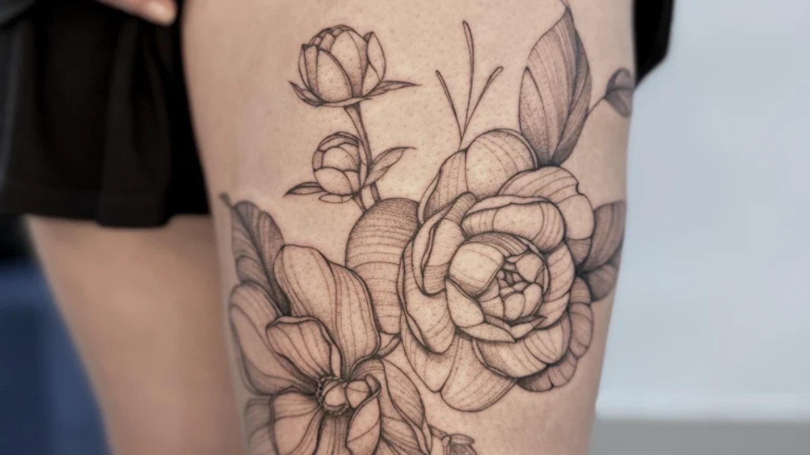
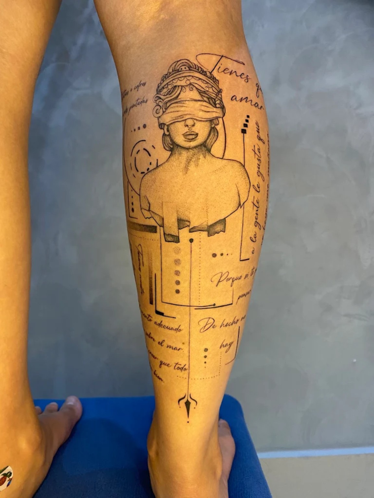
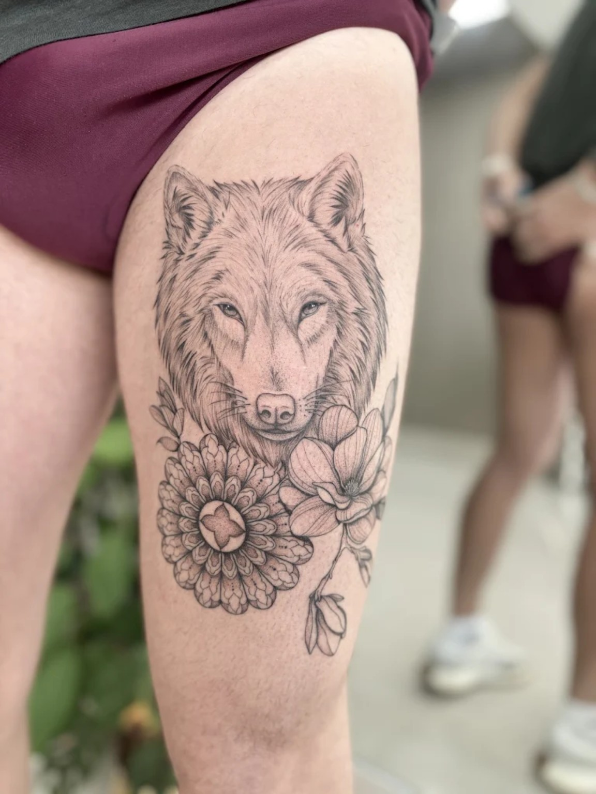
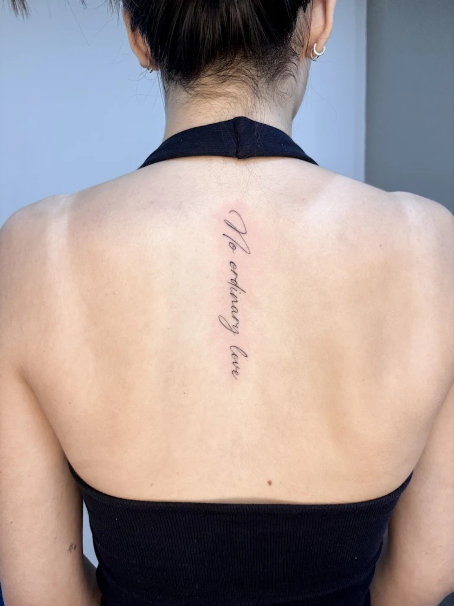

Floral e botânica
Formas orgânicas, pétalas e composições que acompanham o corpo.
Tatuagem autoral
Ideias, símbolos e sentimentos encontram forma em uma tatuagem pensada para acompanhar você.

O que fica com você
Cada traço começa com uma conversa. O significado é seu; a composição, feita para contar essa história na pele.
Um recorte do meu trabalho
Peças autorais que partem de referências, memórias e pequenos detalhes.
Nenhum trabalho nesta categoria. Escolha outro filtro para continuar.
Referências que você guardou
Você ainda não salvou nenhum trabalho. Use “Salvar” em uma peça para guardá-la aqui.
Use as setas para percorrer as peças. Amplie a peça central ou guarde-a na sua coleção.
Linguagens que se encontram
O ponto de partida é o que você quer levar consigo. A forma nasce desse encontro.
Formas orgânicas, pétalas e composições que acompanham o corpo.
Geometria, símbolos e linhas que se organizam em uma composição única.

Personagens, animais e referências transformados em imagem na pele.

Pequenos símbolos e palavras com espaço para respirar.

Um espaço para a sua ideia
Cada tatuagem começa com uma ideia. Meu trabalho é explorar essa ideia com cuidado, entender o que ela representa para você e transformar referências e significados em uma composição que faça sentido na sua pele.
Hemily Christie Tatuadora responsável pelos trabalhos do estúdio
Do primeiro contato à sessão
Você não precisa chegar com tudo decidido. A conversa ajuda a organizar a ideia.
Conte o que imaginou, onde gostaria de tatuar e o tamanho aproximado. Uma referência ajuda, mas não precisa estar pronta.
Conversamos sobre a composição e os detalhes necessários para que a ideia funcione na pele.
Com a proposta alinhada, você recebe as informações para combinar o atendimento.
Com atenção em cada etapa
A sua ideia merece tempo e escuta. Por isso, cada atendimento começa com uma conversa clara sobre a proposta e os próximos passos.
Entenda como funcionaAntes de começar
Se ainda faltar alguma resposta, podemos conversar sobre a sua ideia.
Conte a ideia, o local do corpo e o tamanho aproximado pelo formulário. A conversa ajuda a entender os detalhes da proposta.
Sim. Você pode compartilhar imagens que ajudem a explicar o que imaginou. Elas servem como ponto de partida para uma criação autoral.
Se ainda não souber, tudo bem. Podemos conversar sobre a ideia e pensar na composição em conjunto.
Depois de alinhar a proposta, combinamos os próximos passos e a data do atendimento diretamente.
As orientações de preparação são compartilhadas antes do atendimento, de acordo com a proposta conversada.
As orientações para depois da sessão são passadas no atendimento para que você saiba como cuidar da tatuagem.
Uma conversa pode começar aqui
Conte um pouco do que está imaginando. A gente conversa sobre os detalhes, sem pressa.
Atendimento presencial
O endereço e a localização são compartilhados durante a conversa de agendamento.
Perguntar sobre localização